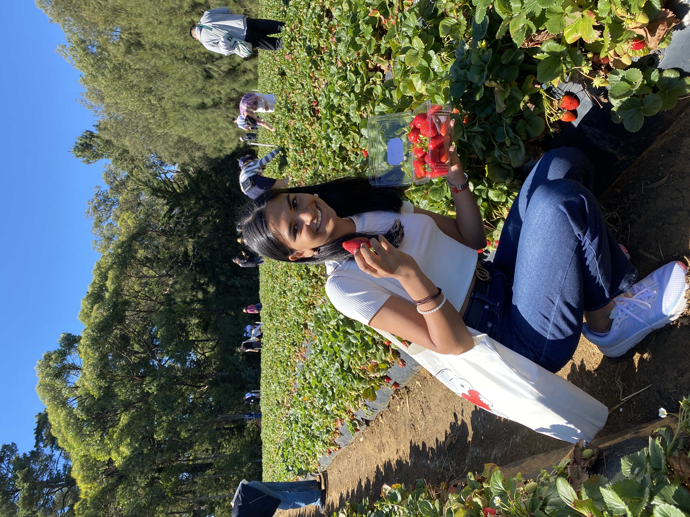

01 / THE SHORT VERSION ✳
Curious by nature.
Analytical by design.
Business analysis, data storytelling, predictive modelling and a little bit of creative thinking.
More about me ↗Hi, I'm Durgka — a Business & Data Analyst who loves finding the human story behind the numbers. I turn messy information into useful insights and better digital experiences.
Business analysis, data storytelling, predictive modelling and a little bit of creative thinking.
More about me ↗AUD revenue leakage assessed through operational analytics
More than spreadsheets & SQL ☺
I like solving the kind of problems that live between technology, business and people.
I'm a Melbourne-based Bachelor of Information Technology graduate from Monash University, majoring in Business Information Systems and minoring in Data Science.
My work spans requirements gathering, stakeholder collaboration, Agile delivery, data modelling, Power BI reporting and machine learning. The common thread? Making complex things easier to understand and act on.
Real projects. Practical problems. A bit of experimentation along the way.
Created a Python + SQL telemetry pipeline, a Random Forest failure-risk workflow with explainability, and interactive operations visualisation. Connected operational inefficiencies with a $99K AUD revenue-leakage analysis.
Developed four functional dashboards across HR, Sales, Finance and Customer Segmentation, with Power Query cleaning, custom DAX KPIs and source-data validation.
Translated stakeholder needs into user stories and acceptance criteria, supported UAT and Agile sprints, and used feedback and incident trends to inform accessibility and UX enhancements.
Developed enterprise planning skills through Anaplan model-building training, exploring data hubs, modules, list hierarchies, imports, planning logic and UX pages.
Analysed 60+ monthly incidents and 100+ user feedback entries, supported Agile development and accessibility improvements. Reported contributions included 20% fewer repeat issues and 15% better task-completion outcomes.
Built four Power BI dashboards, created DAX performance measures, improved data accuracy and delivered actionable insights across HR, sales, finance and customer segmentation.
Created 15 user stories and 40+ acceptance criteria across six epics. Supported Agile delivery, accessibility validation, Jira issue tracking and AWS Amplify deployment monitoring.
Resolve 60+ customer cases per shift and collaborate across logistics, sales and warehouse teams to investigate and address fulfilment issues.
Managed a $25K+ society budget and approximately 100 transactions monthly; delivered digital marketing campaigns and reviewed performance analytics for events and engagement.
Requirements gathering · User stories · Acceptance criteria · BPMN · Stakeholder engagement · UAT · Agile Scrum · Jira
Power BI · DAX · Power Query · Excel · Data cleaning · Reporting · KPI design · Visual storytelling
SQL · Python · pandas · scikit-learn · Plotly · Java · REST APIs · Relational modelling
Anaplan · Polaris · Enterprise planning · Data integration · Human-centred design · Accessibility · AWS Amplify
Bachelor of Information Technology
Major: Business Information Systems · Minor: Data Science
Anaplan Professional Model Builder certification · Anaplan Level 1 & Level 2 (Polaris) learning
A little space for everything that makes me, me.

Exploring new places, embracing creativity, and finding inspiration beyond technology.
My time with the Monash Dance Society brought together creativity, community and leadership. As Treasurer, I supported events and managed society finances.
Supported university events and student initiatives, building connections and contributing to a welcoming campus community.
I'm interested in opportunities across business analysis, data analytics, business intelligence and enterprise planning. Let's connect.
↗